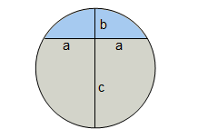

This page describes how to derive the forumula for the radius of an arc given the arc's width W, and height H.

The arc radius equation is a use of the intersecting chord theorem. In the figure on the right the two lines are chords of the circle, and the vertical one passes through the center, bisecting the other chord.The blue segment is the arc whose radius we are finding. Its width is 2a, and height b.
Recall from the intersecting chord theorem that Since a is half the arc's width W, and b is its height H: Combining terms Dividing both sides by H
Now, the diameter of the circle is equal to b+c, and b is the height H, so The radius is half the diameter, so dividing through by 2: